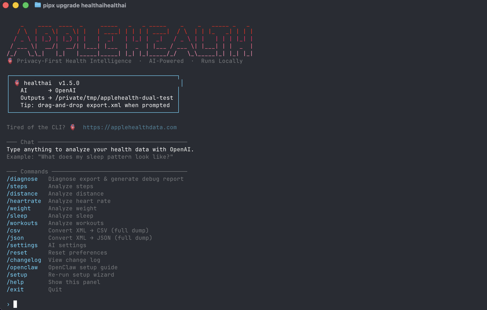

I turned applehealth into a CLI
A command-line tool to analyze your Apple Health export.xml with AI — locally on your Mac, without uploading the file anywhere. Open source, MIT.

The healthai welcome screen — drag-and-drop your export.xml and ask anything.
TL;DR
pipx install healthai
healthai
# drag-and-drop export.xml, ask anythingSource: github.com/krumjahn/applehealth · Docs: applehealthdata.com/apple-health-cli
Why a CLI?
I already ship a Mac app for Apple Health analysis. It works for most people. But every few weeks I'd hear the same thing from a different angle:
jq?"The people asking weren't a huge audience — but they were the ones most likely to actually use their health data, fork the parser, file good bug reports, and tell their friends. The Mac app is the front door. The CLI is for the people who'd rather come in through the terminal.
What it does
Same core as the Mac app, in your shell. You point it at export.xml (the file iPhone produces when you tap Export All Health Data), and you can:
- Ask questions in natural language — "What does my sleep pattern look like over the last 30 days?" The CLI extracts the relevant slice and sends only that to the AI provider.
- Run slash commands for canned analyses:
/sleep,/steps,/heartrate,/distance,/weight,/workouts. - Export to CSV or JSON with
/csvand/json— full dumps you can pipe into anything. - Diagnose broken exports with
/diagnose. Apple's export format is fragile and I've seen every kind of corruption.
The privacy model
The export.xml file never leaves your machine. The CLI parses it locally with a streaming XML reader (the file can be 500MB+ — you don't want to load that into memory). When you ask a question, only the summarized slice goes out to the AI provider you configured.
Concretely: if you ask "how was my sleep last week?", the AI sees ~7 numbers, not 18 months of every heart-rate sample. That's the whole point of doing the parsing locally. Cloud "health AI" products upload the entire file, which is both slow and a privacy nightmare for what's arguably the most sensitive dataset on your phone.
Why open source?
Two reasons. First — trust. Telling people "your data stays on your machine" works a lot better when they can read the code. The repo is github.com/krumjahn/applehealth, MIT licensed, no telemetry.
Second — the parser itself is useful. Apple's export.xml schema is undocumented in any practical sense, has changed across iOS versions, and includes some genuinely weird edge cases (workouts with negative duration, sleep stages that overlap, units that silently change between metric and imperial). If you want to build anything on top of Apple Health, having a battle-tested parser to fork from is worth more than the AI layer on top.
Install it
# macOS
brew install pipx
pipx install healthai
# Linux / Windows
python3 -m pip install --user pipx
pipx ensurepath
pipx install healthaiThen:
healthaiYou'll get the welcome panel above. Drag export.xml onto the terminal window when prompted (or paste the path). That's the whole setup.
What's next
The Mac app already supports LM Studio and Ollama for fully-offline analysis with no API key. That's coming to the CLI next — currently it ships with OpenAI support. If you'd run this against a local model, drop a thumbs-up on the GitHub issue.
Other things on the list, in rough priority order:
- Plain-text mode (no AI) for people who just want fast slash-command summaries
- JSON output flag on every command so you can pipe to
jq - HRV and respiratory-rate commands (currently only via the open-ended question mode)
- An
--export-windowflag to pre-filter to a date range before analysis
If you try it
I'd genuinely love feedback — what's missing, what's broken, what slash commands you wish existed. Open an issue on GitHub, or email me. The repo has 0 stars at time of writing; if you find this useful, a star helps it surface for the next person searching for "apple health cli".
And if a GUI is more your thing, the Mac app does all of this with point-and-click — same privacy model, no terminal required.
Try the Apple Health CLI
Free, open source, runs locally. Less than a minute to install.
Frequently Asked Questions
How does the CLI handle privacy?
All processing happens locally on your Mac. Your Apple Health export.xml file never leaves your device — no cloud upload, no third-party servers, no telemetry. The CLI reads your XML file directly and outputs CSV, JSON, or Excel formats to your local filesystem.
What Apple Health data types are supported?
Heart rate, HRV, sleep analysis, workout summaries, step count, active calories, VO2 max, respiratory rate, and 20+ other HealthKit record types. Run apple-health-cli list to see the full list.
Do I need an Apple Watch to use the CLI?
No. The CLI works with any Apple Health export, regardless of whether you have an Apple Watch. If you only have iPhone step counts and workout data from manual entry, that exports fine too.
Can I export data from multiple years?
Yes. Apple's export includes your complete health history — every record you've logged since starting to use the Health app. A 3-year export with workouts and heart rate data typically processes in under 30 seconds.
How is this different from the Health app's built-in export?
Apple's built-in export gives you a ZIP file with a single XML file — readable but not analysis-ready. The CLI parses that XML into structured CSV/JSON with typed columns (date, type, value, unit), making it usable in Excel, Python, or any AI tool without manual data cleaning.